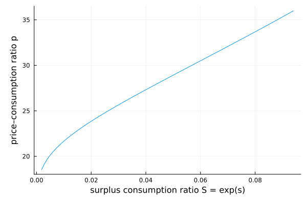

Campbell–Cochrane (1999): habit formation
Campbell and Cochrane explain the equity premium with an external habit. The single state is the log surplus consumption ratio $s = \log\frac{C-X}{C}$ — how far consumption sits above the habit $X$ — which mean-reverts around $\bar s$. The price–consumption ratio $p(s)$ solves a linear second-order ODE (a special case of the HJB machinery):
\[0 = 1 + \bigl(\mu + \mu_p(s) + \sigma_p(s)\,\sigma - r(s) - \kappa(s)\,(\sigma+\sigma_p(s))\bigr)\, p(s),\]
where the drift $\mu_p$, volatility $\sigma_p$, price of risk $\kappa$, and riskless rate $r$ are all functions of $s$ through the habit.
The model
The parameters live in a struct:
using EconPDEs, Plots
Base.@kwdef struct CampbellCochraneModel
μ::Float64 = 0.0189 # mean consumption growth
σ::Float64 = 0.015 # volatility of consumption growth
γ::Float64 = 2.0 # utility curvature (relative risk aversion)
ρ::Float64 = 0.116 # discount rate
κs::Float64 = 0.138 # mean-reversion speed of log surplus consumption ratio
b::Float64 = 0.0 # sensitivity of riskless rate to surplus ratio (b=0 ⇒ constant r)
endMain.CampbellCochraneModelWe solve the model at its default parameters:
m = CampbellCochraneModel()Main.CampbellCochraneModel(0.0189, 0.015, 2.0, 0.116, 0.138, 0.0)The grid
We define the grid, a NamedTuple whose key is the state variable (s, the log surplus consumption ratio). The grid concentrates points near the reflecting upper bound $s_{\max}$, where the surplus ratio is highest, and stretches far into the left tail.
function initialize_stategrid(m::CampbellCochraneModel; sn = 1000)
(; μ, σ, γ, ρ, κs, b) = m
Sbar = σ * sqrt(γ / (κs - b / γ))
sbar = log(Sbar)
smax = sbar + 0.5 * (1 - Sbar^2)
shigh = log.(range(0.0, exp(smax), length = div(sn, 10)))
slow = range(-300.0, shigh[2], length = sn - div(sn, 10))
(; s = vcat(slow[1:(end-1)], shigh[2:end]))
end
stategrid = initialize_stategrid(m)(s = [-300.0, -299.67403740931655, -299.34807481863317, -299.0221122279497, -298.69614963726633, -298.3701870465829, -298.0442244558995, -297.71826186521605, -297.39229927453266, -297.0663366838492 … -2.4598213052744216, -2.4487714690878364, -2.4378423985556466, -2.4270314824514307, -2.4163361933346827, -2.405754084004146, -2.3952827841368505, -2.3849199971013038, -2.3746634969341147, -2.364511125470097],)The initial guess
We define the initial guess, a NamedTuple whose key is the unknown function (p, the price–consumption ratio). These names (and the finite differences of $p$, such as ps_up) are what reappear in the equation below.
guess = (; p = ones(length(stategrid[:s])))(p = [1.0, 1.0, 1.0, 1.0, 1.0, 1.0, 1.0, 1.0, 1.0, 1.0 … 1.0, 1.0, 1.0, 1.0, 1.0, 1.0, 1.0, 1.0, 1.0, 1.0],)The PDE equation
We now write the function encoding the HJB equation. Following the package convention, it takes the current state (a grid point) and u (each unknown together with its finite-difference derivatives there) and returns the time derivative of each unknown.
function (m::CampbellCochraneModel)(state::NamedTuple, u::NamedTuple)
(; μ, σ, γ, ρ, κs, b) = m
(; s) = state
(; p, ps_up, ps_down, pss) = u
Sbar = σ * sqrt(γ / (κs - b / γ))
sbar = log(Sbar)
λ = 1 / Sbar * sqrt(1 - 2 * (s - sbar)) - 1
μs = -κs * (s - sbar)
σs = λ * σ
# pricing uses the risk-adjusted drift of surplus consumption, not the physical one
μs_effective = μs + σs * (σ - γ * (σ + σs))
ps = (μs_effective >= 0) ? ps_up : ps_down
σp = ps / p * σs
μp = ps / p * μs + 0.5 * pss / p * σs^2
κ = γ * (σ + σs)
r = ρ + γ * μ - (γ * κs - b) / 2 + b * (sbar - s)
pt = -p * (1 / p + μ + μp + σp * σ - r - κ * (σ + σp))
return (; pt)
endSolving the model
With the grid, guess, and equation in hand, pdesolve solves the stationary system:
result = pdesolve(m, stategrid, guess)EconPDEResult
solution: p (998)
residual_norm: 3.45e-12
converged: true (tolerance 1.49e-08)The solution
Plotted against the surplus consumption ratio $S = e^s$, the price–consumption ratio rises steeply in good times: as consumption pulls away from the habit, effective risk aversion falls, discount rates drop, and valuations climb.
Sbar = m.σ * sqrt(m.γ / (m.κs - m.b / m.γ))
sbar = log(Sbar)
ss = stategrid[:s]
mask = ss .>= (sbar - 4)
plot(exp.(ss[mask]), result.solution.p[mask]; xlabel = "surplus consumption ratio S = exp(s)", ylabel = "price–consumption ratio p", legend = false)
This page was generated using Literate.jl.